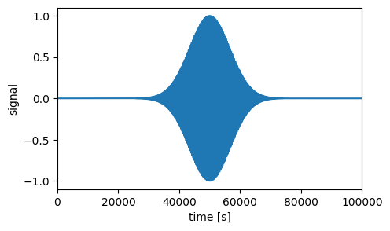
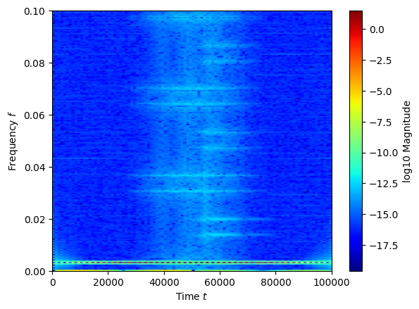
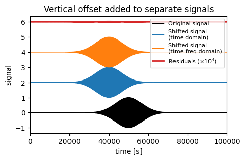
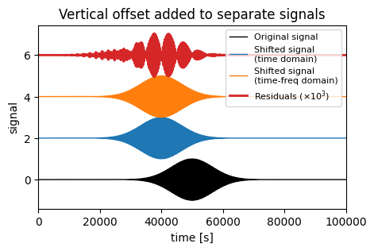
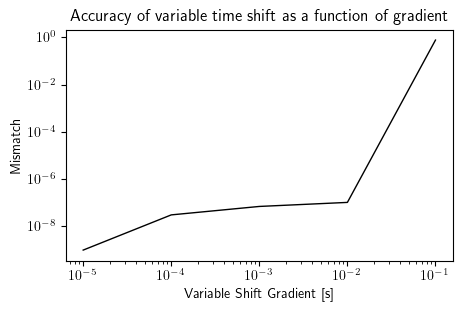
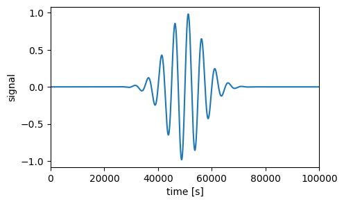
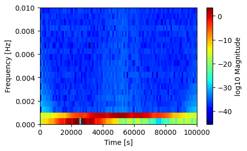
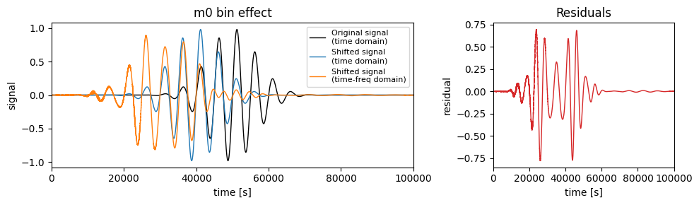
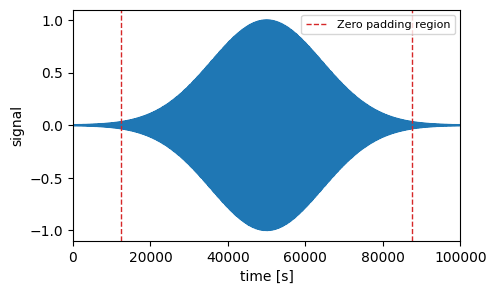
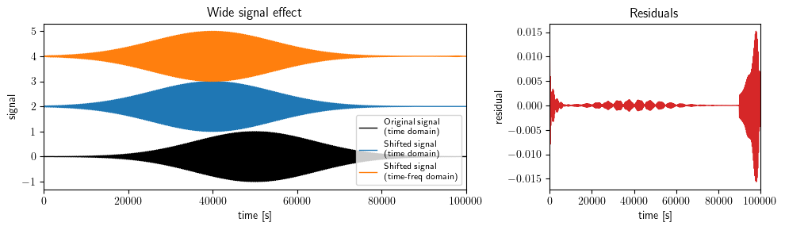

Variable Time Shifts
This notebook contains an example of performing a variable time shift.
[101]:
import numpy as np
import matplotlib.pyplot as plt
import time
import WDM
from WDM.code.plotting.plotting import time_frequency_plot
from WDM.code.discrete_wavelet_transform import WDM
Small helper function to compare signals
[102]:
def calc_mismatch(h1, h2):
"""
Computes the mismatch between signals h1 and h2.
"""
inner_product = np.abs(np.dot(h1, h2))
norm_h1 = np.sqrt(np.dot(h1,h1))
norm_h2 = np.sqrt(np.dot(h2,h2))
overlap = inner_product / (norm_h1 * norm_h2)
mismatch = 1 - overlap
return mismatch
Let’s start by creating an example signal. We will use a simple sine-Gaussian.
[103]:
fs = 0.2 # sampling frequency [Hz]
T = 1.0e5 # duration [s]
f0 = 3.0e-3 # central frequency [Hz]
w = T/15. # duration [s]
sine_gauss = lambda t: np.exp(-0.5*((t-T/2.)/w)**2)*np.sin(2*np.pi*f0*t)
times = np.arange(0, T, 1/fs)
signal = sine_gauss(times)
fig, ax = plt.subplots(figsize=(5,3))
ax.plot(times, signal)
ax.set_xlim(0, T)
ax.set_xlabel(r'time [s]')
ax.set_ylabel('signal')
plt.show()

Now we set up the WDM transform object. We use 200 frequency slices.
[104]:
N, Nf= times.shape[0], 200
wdm = WDM.WDM_transform(dt=1/fs, Nf=Nf, N=N, q=32, calc_m0=True)
print(wdm)
WDM_transform(Nf=200, N=20000, q=32, d=4, A_frac=0.25, calc_m0=True)
self.Nt = 100 time cells
self.Nf = 200 frequency cells
self.dT = 1000.0 time resolution
self.dF = 0.0005 frequency resolution
self.dt = 5.0 time series cadence
self.df = 1e-05 time series fft frequency resolution
self.K = 12800 window length
Now take the discrete wavelet transform of our signal.
[105]:
w = wdm(signal)
Just to check that everything is working, let’s plot the time-frequency coefficients.
[106]:
fig, ax = time_frequency_plot(wdm, w, scale='log')
plt.show()

In order to use the time-delay filters to peform time shifts using the WDM package it is first necessary to call the build_time_delay_filter_interpolants method. The arguments are the maximum lag index L and the number of interpolation points N.
[107]:
L = 25 # the maximum lag index
N = 10 # the number of interpolation points
wdm.build_time_delay_filter_interpolants(L, N)
tn = np.arange(wdm.Nt)*wdm.dT
First, let’s consider the case of a constant time shift \(\delta\).
[108]:
delta_constant = lambda t: (T/10.)*np.ones_like(t)
We will now apply this time shift to the signal using two methods. First, as a check, we do this simply in the time domain by interpoating the original signal. Second, using the WDM package, we apply the shift in the time-frequency domain using the time-delay filters.
[109]:
shifted_signal_constant_t = np.interp(times + delta_constant(times),
times,
signal)
w_shifted_constant = wdm.apply_variable_time_shift(w, delta_constant(tn))
shifted_signal_constant_tf = wdm.idwt(w_shifted_constant)
fig, ax = plt.subplots(figsize=(5,3))
ax.plot(times, signal,
c='k', lw=1, label='Original signal')
ax.plot(times, 2+shifted_signal_constant_t,
c='C0', lw=1, label='Shifted signal\n(time domain)')
ax.plot(times, 4+shifted_signal_constant_tf,
c='C1', lw=1, label='Shifted signal\n(time-freq domain)')
ax.plot(times, 6+1000*(shifted_signal_constant_t-shifted_signal_constant_tf),
c='C3', lw=2, label=r'Residuals ($\times 10^3$)')
ax.set_xlim(0, T)
ax.set_xlabel(r'time [s]')
ax.set_ylabel('signal')
ax.legend(fontsize=8, loc='upper right')
ax.set_title('Vertical offset added to separate signals')
plt.show()
print("The mismatch between the methods is:", calc_mismatch(shifted_signal_constant_t, shifted_signal_constant_tf))

The mismatch between the methods is: 3.163538320194448e-10
Second, let’s consider the case of a variable time shift \(\delta(t)\) of the form \(a + bt\).
[110]:
delta_variable = lambda t,a,b: a+b*t
We now apply this variable time shift using the same two methods as before.
[111]:
starting_shift = T/10.
gradient = 1/1000.
shifted_signal_variable_t = np.interp(times + delta_variable(times, starting_shift, gradient),
times,
signal)
w_shifted_variable = wdm.apply_variable_time_shift(w, delta_variable(tn, starting_shift, gradient))
shifted_signal_variable_tf = wdm.idwt(w_shifted_variable)
fig, ax = plt.subplots(figsize=(5,3))
ax.plot(times, signal,
c='k', lw=1, label='Original signal')
ax.plot(times, 2+shifted_signal_variable_t,
c='C0', lw=1, label='Shifted signal\n(time domain)')
ax.plot(times, 4+shifted_signal_variable_tf,
c='C1', lw=1, label='Shifted signal\n(time-freq domain)')
ax.plot(times, 6+1000*(shifted_signal_variable_t-shifted_signal_variable_tf),
c='C3', lw=2, label=r'Residuals ($\times 10^3$)')
ax.set_xlim(0, T)
ax.set_xlabel(r'time [s]')
ax.set_ylabel('signal')
ax.legend(fontsize=8, loc='upper right')
ax.set_title('Vertical offset added to separate signals')
plt.show()
print("The mismatch between the methods is:", calc_mismatch(shifted_signal_variable_t, shifted_signal_variable_tf))

The mismatch between the methods is: 6.748666203648668e-08
The accuracy of the variable time-shift depends on the evolution of the time shift arguments
[112]:
grad_list = [0.1, 0.01, 0.001, 0.0001, 0.00001]
mismatch_list = np.zeros_like(grad_list)
starting_shift = T/10.
for i in range(len(grad_list)):
grad = grad_list[i]
shifted_signal_variable_t = np.interp(times + delta_variable(times, starting_shift, grad),
times,
signal)
w_shifted_variable = wdm.apply_variable_time_shift(w, delta_variable(tn, starting_shift, grad))
shifted_signal_variable_tf = wdm.idwt(w_shifted_variable)
mismatch_list[i] = calc_mismatch(shifted_signal_variable_t, shifted_signal_variable_tf)
fig, ax = plt.subplots(figsize=(5,3))
ax.loglog(grad_list, mismatch_list,
c='k', lw=1,)
ax.set_xlabel(r'Variable Shift Gradient [s]')
ax.set_ylabel(r'Mismatch')
ax.set_title('Accuracy of variable time shift as a function of gradient')
plt.show()

It is important that the input signal is appropriately padded and modified before the application of the variable time shift. (See the diagram in the documentation for the time-delay filters).
Case 1: Signal in m = 0 bin
Consider a wavelet with a frequency that puts the signal in the m = 0 bin.
[113]:
fs = 0.2 # sampling frequency [Hz]
T = 1.0e5 # duration [s]
f0_m0 = 2.0e-4 # central frequency [Hz]
w = T/15. # duration [s]
sine_gauss = lambda t: np.exp(-0.5*((t-T/2.)/w)**2)*np.sin(2*np.pi*f0_m0*t)
times = np.arange(0, T, 1/fs)
signal_m0_bin = sine_gauss(times)
fig, ax = plt.subplots(figsize=(5,3))
ax.plot(times, signal_m0_bin)
ax.set_xlim(0, T)
ax.set_xlabel(r'time [s]')
ax.set_ylabel('signal')
plt.show()

As can be seen, this signal has support in the lowest bin
[114]:
w_m0 = wdm(signal_m0_bin)
fig, ax = plt.subplots(figsize=(5,3))
im = ax.imshow(np.log(np.abs(w_m0.T)),
aspect='auto', origin='lower', cmap='jet',
extent=[0., wdm.T, 0., wdm.f_Ny])
fig.colorbar(im, label='log10 Magnitude', ax=ax)
ax.set_xlabel(r'Time [s]')
ax.set_ylabel(r'Frequency [Hz]')
ax.set_ylim(0,0.01)
plt.show()

Now if we apply the two variable time shifts to this system, we will observe a significant mismatch
[115]:
starting_shift = T/10.
gradient = 1/1000.
shifted_signal_m0_variable_t = np.interp(times + delta_variable(times, starting_shift, gradient),
times,
signal_m0_bin)
w_m0_shifted_variable = wdm.apply_variable_time_shift(w_m0, delta_variable(tn, starting_shift, gradient))
shifted_m0_signal_variable_tf = wdm.idwt(w_m0_shifted_variable)
fig, (ax1, ax2) = plt.subplots(
1, 2, figsize=(10, 3),
gridspec_kw={'width_ratios': [2, 1]}
)
# Signals
ax1.plot(times, signal_m0_bin,
c='k', lw=1, label='Original signal\n(time domain)')
ax1.plot(times, shifted_signal_m0_variable_t,
c='C0', lw=1, label='Shifted signal\n(time domain)')
ax1.plot(times, shifted_m0_signal_variable_tf,
c='C1', lw=1, label='Shifted signal\n(time-freq domain)')
ax1.set_xlim(0, T)
ax1.set_xlabel(r'time [s]')
ax1.set_ylabel('signal')
ax1.legend(fontsize=8, loc='upper right')
ax1.set_title('m0 bin effect')
# Residuals
ax2.plot(
times,
shifted_signal_m0_variable_t - shifted_m0_signal_variable_tf,
c='C3', lw=1
)
ax2.set_xlim(0, T)
ax2.set_xlabel(r'time [s]')
ax2.set_ylabel('residual')
ax2.set_title('Residuals')
plt.tight_layout()
plt.show()
print("The mismatch between the methods is:", calc_mismatch(shifted_signal_m0_variable_t, shifted_m0_signal_variable_tf))

The mismatch between the methods is: 0.37937199095390706
Case 2: Signal too close to boundary
The time shift operator performs a cyclic shift on indices by different lag values, hence the signal needs to be appropriately zero-padded to avoid issues with overlapping regions.
[116]:
fs = 0.2 # sampling frequency [Hz]
T = 1.0e5 # duration [s]
f0 = 3.0e-3 # central frequency [Hz]
w_wide = T/7.
sine_gauss = lambda t: np.exp(-0.5*((t-T/2.)/w_wide)**2) * np.sin(2*np.pi*f0*t)
times = np.arange(0, T, 1/fs)
signal_wide = sine_gauss(times)
fig, ax = plt.subplots(figsize=(5,3))
ax.plot(times, signal_wide)
padding_edge = 0.5 * L * wdm.dT
ax.axvline(
padding_edge,
ls='--',
lw=1,
c='C3',
label='Zero padding region'
)
ax.axvline(
T - padding_edge,
ls='--',
lw=1,
c='C3'
)
ax.set_xlim(0, T)
ax.set_xlabel(r'time [s]')
ax.set_ylabel('signal')
ax.legend(fontsize=8)
plt.show()

[117]:
w_wide = wdm(signal_wide)
starting_shift = T/10.
gradient = 1/1000.
shifted_signal_wide_variable_t = np.interp(times + delta_variable(times, starting_shift, gradient),
times,
signal_wide)
w_wide_shifted_variable = wdm.apply_variable_time_shift(w_wide, delta_variable(tn, starting_shift, gradient))
shifted_wide_signal_variable_tf = wdm.idwt(w_wide_shifted_variable)
fig, (ax1, ax2) = plt.subplots(
1, 2, figsize=(10, 3),
gridspec_kw={'width_ratios': [2, 1]}
)
# Signals
ax1.plot(times, signal_wide,
c='k', lw=1, label='Original signal\n(time domain)')
ax1.plot(times, 2+shifted_signal_wide_variable_t,
c='C0', lw=1, label='Shifted signal\n(time domain)')
ax1.plot(times, 4+shifted_wide_signal_variable_tf,
c='C1', lw=1, label='Shifted signal\n(time-freq domain)')
ax1.set_xlim(0, T)
ax1.set_xlabel(r'time [s]')
ax1.set_ylabel('signal')
ax1.legend(fontsize=8, loc='lower right')
ax1.set_title('Wide signal effect')
# Residuals
ax2.plot(
times,
shifted_signal_wide_variable_t - shifted_wide_signal_variable_tf,
c='C3', lw=1
)
ax2.set_xlim(0, T)
ax2.set_xlabel(r'time [s]')
ax2.set_ylabel('residual')
ax2.set_title('Residuals')
plt.tight_layout()
plt.show()
print("The mismatch between the methods is:", calc_mismatch(shifted_signal_wide_variable_t, shifted_wide_signal_variable_tf))

The mismatch between the methods is: 1.456277081857138e-05